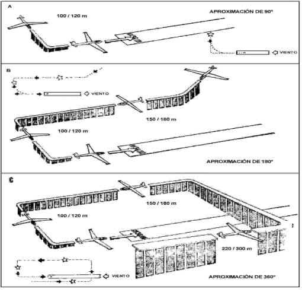

CURSO TEÓRICO
DE
PILOTO DE PLANEADOR
[ Arriba ] [ 1ª Sección ] [ 2ª Sección ] [ 3ª Sección ] [ 4ª Sección ] [ 5ª Sección ] [ 6ª Sección ] [ 7ª Sección ] [ 8ª Sección ] [ 9ª Sección ] [ 10ª Sección ] [ 11ª Sección ] [ 12ª Sección ] [ 13ª Sección ] [ 14ª Sección ] [ 15ª Sección ]
6ª Sección: TIRABUZONES, ESPIRALES, APROXIMACIONES Y DESLIZAMIENTOS
TIRABUZONES
En razón de sus características,
los aviones modernos son difíciles de entrar en tirabuzón. Por lo tanto su práctica ha
sido eliminada en los cursos de Piloto Privado de la especialidad, insistiéndose en
cambio en las maniobras conducentes a su prevención (pérdidas de sustentación, vuelo
lento, etcétera).
En los planeadores, el
tirabuzón puede ser empleado para descender rápidamente sin aumentar la velocidad,
cuando exista la posibilidad de ser absorbido por un cúmulus o al encontrar fuertes
ascendentes sin contar con spoilers o frenos de picada. Sin embargo, no debe intentarse su
ejecución sin conocer las características de la aeronave a emplear y sin estar provisto
de paracaídas.
El tirabuzón se produce cuando el ala del lado interno al
mismo se mueve a través del aire con un ángulo de ataque mucho mayor que la opuesta.
Esto la pone en pérdida
de sustentación, lo que origina -en principio- su caída y con ello una rápida rotación
sobre el eje longitudinal, que sólo puede detenerse con la recuperación de la
sustentación normal del ala en pérdida.
Antes de practicar
tirabuzones, debe constatarse la posición del centro de gravedad del planeador.
Si se encuentra muy adelante y
la palanca es empujada demasiado en ese sentido durante la salida, o sostenida en esa
posición mucho tiempo, una máquina aerodinámica limpia puede tomar una velocidad
excesiva.
Para evitarlo, tan pronto cese
la rotación y la velocidad tienda a aumentar, la aeronave debe ser sacada de la picada en
forma suave pero firme.
Una presión atrás brusca o
demasiado rápida puede ocasionar una pérdida de sustentación secundaria o una falla
estructural.
Si, en cambio, el centro de
gravedad está muy atrás y la aeronave entra o es puesta intencionalmente en tirabuzón,
la recuperación puede ser difícil o en algunos casos imposible.
Por estas razones, antes de
intentar la práctica de esta maniobra hay que asegurarse que el peso esté dentro de los
máximos y mínimos permisibles y no se excedan los límites delantero o trasero de la
posición del centro de gravedad.
Si inadvertidamente se llega a una pérdida de
sustentación o tirabuzón con los spoilers aplicados, éstos deberán ser retraídos de
inmediato.
Vamos a insistir: la salida del tirabuzón no debe ser
brusca o abrupta, especialmente si se ha permitido que la aeronave acelere hasta cerca de
sus limites máximos que nunca deben ser excedidos intencionalmente.
EJECUCION
Con no
menos de 1.000 m (3.300 pies)
de altura, después de verificar -mediante virajes
escarpados en ambos sentidos- que el área está libre de otras aeronaves, levantar la
nariz del planeador sobre el horizonte llevando gradualmente la palanca atrás hasta que
llegue a su posición extrema.
No será preciso adoptar en la mayoría de los planeadores
un ángulo muy empinado. Generalmente 15º a 30º serán suficientes. La actitud de cabeceo se mantendrá
constante hasta que la palanca llegue totalmente atrás y la nariz comience a caer. En
este momento se accionará a fondo el pedal del lado que se desea el tirabuzón,
manteniendo así ambos comandos hasta el momento de la recuperación.
Cuando se desee salir del tirabuzón, aplicar timón
opuesto al sentido de rotación y aflojar ligeramente la palanca hacia adelante hasta que
éste cese y la máquina entre en una picada recta de la que se recuperará en forma
normal, debiendo tenerse en cuenta no permitir un aumento excesivo en la velocidad, ni
aplicar en forma brusca el timón de profundidad, para evitar cargas estructurales o una
pérdida secundaria.
Si durante la entrada o ya en el tirabuzón, se notara
tendencia a un aumento de la velocidad y/o una disminución en la rotación, la aeronave
habrá entrado en una espiral picada. En este caso debe procederse a una inmediata salida,
centrando los mandos y volviendo al planeo recto.
ESPIRALES
Pueden ser
intencionales -cuando haya que perder altura en un determinado sector o involuntarias -como consecuencia de mala
aplicación de los mandos o por intentar el vuelo en nubes sin estar capacitado.
Puede suceder que durante la práctica de ciertas
maniobras, no se apliquen oportunamente los alerones para evitar la sobreinclinación. Un
aumento incontrolado de ésta, originará que la nariz descienda aumentando la velocidad.
Si se intenta corregir llevando la palanca atrás sin
levantar el ala baja, el viraje se cerrará aún más, agravándose el error. Para volver
al planeo recto desde una espiral picada, no intentar la recuperación simultánea con los
alerones y timón de profundidad. Ello puede originar cargas sobre las alas de una
magnitud tal que las mismas no soporten el esfuerzo combinado de torsión -producido por
los alerones- y el de flexión
-debido a la acción del timón de profundidad-.
La forma correcta de recuperar es disminuir la
inclinación para luego levantar la nariz hasta obtener la actitud normal de planeo.
APROXIMACIONES
Aun cuando
existen varios tipos dc aproximaciones, todas terminan -básicamente- en la de 90º (Fig.
2 A, 2 B y 2 C).
Esto significa que independientemente de las alturas o
figuras con respecto al terreno, siempre debe llegarse al punto base (situado a 45º del punto de aterrizaje) con una altura entre 100 y 120 m. (300
a 400 pies). Llegar a este punto con la altura enunciada permite un ajuste final de la
maniobra ya sea alargando la trayectoria o acortándola.
Para unificar la terminología: el lado paralelo a la
dirección de aterrizaje -con viento de cola-, se denomina recta inicial. El siguiente, a
90º del punto de toque -donde se tiene el viento de costado- se designa como recta o lado
básico en razón que en el mismo se sitúa el punto base.
Por último el tramo final, desde donde tiene lugar el
último viraje para enfrentar la pista, lleva el nombre de recta o tramo final.
Es preciso llegar a cada una de estas posiciones con una
altura establecida, que puede variar con los diferentes tipos de planeador empleados en la
instrucción o entrenamiento.
En cuanto a las distancias respecto a la pista, pueden
variar -aun para la misma aeronave- en
relación con la velocidad del viento (serán menores cuando mayor sea la velocidad de
éste) considerándose conveniente contar siempre con un margen de altura un poco mayor
que el necesario por razones de seguridad.
El exceso puede disiparse con el empleo del flaps,
spoilers, deslizamientos o variando la velocidad en final.
En este último caso resultará más fácil ajustar la
corrección cuanto más pronto se note la necesidad de hacerlo, puesto que para eliminar
altura con este método, es preciso disminuir la velocidad de planeo; procedimiento no
aconsejable en razón del riesgo de entrar en pérdida a una altura que impida su
recuperación.
Cuando por error en la apreciación de la intensidad del
viento se llegue al lado final con poco margen de altura, el planeo puede alargarse
ligeramente empleando una velocidad mayor que la normal a efectos de aumentar la
diferencia entre ambas (planeador-viento).
Nunca se intentará perder el exceso de altura en final,
mediante la realización de un viraje de 360º. Esto terminará siempre en un serio
problema, que, en el mejor de los casos, puede ser la necesidad de efectuar un aterrizaje
de emergencia en cualquier dirección, independientemente del viento reinante en un
terreno inadecuado y sin las dimensiones mínimas.

Figura Nº 2 –
Aproximaciones
No es
preciso pensar demasiado en las otras alternativas, si recordamos que el planeador no
puede, como el avión, corregir el error dando otra vuelta.
Si la aeronave empleada tiene spoilers o flaps, debe
comprobarse su funcionamiento con anticipación a la llegada a final para decidir -en caso
que los mismos no puedan accionarse-, un procedimiento alternativo.
Atención: No emplear -dentro de lo posible- los spoilers
durante los virajes.
Cuando se opte por deslizamientos, recordar que el
velocímetro no proporcionará lecturas precisas y que la salida de ellos debe realizarse
con suficiente altura para acomodar la velocidad antes de comenzar la nivelación para el
aterrizaje con no menos de 5 m. (15 pies) en final.
DESLIZAMIENTOS
Propósito:
Los deslizamientos capacitan al alumno o piloto para corregir errores menores en los
cálculos de aproximación y también para la ejecución de aterrizajes con viento
cruzado.
Pueden definirse como el método de perder altura sin
aumentar la velocidad, especialmente en planeadores sin flaps o spoilers. Su aplicación
es la de permitir aterrizajes cortos en campos rodeados de obstáculos o la de ajustar el
cálculo final de la aproximación.
Existen tres clases de deslizamientos: en avance,
laterales y en virajes.
En el primero la dirección del desplazamiento continúa
siendo la original. Se ejecuta de la siguiente manera:
Desde un planeo recto, se inclina el planeador con los
alerones hacia uno de los lados del eje longitudinal -derecho o izquierdo-, aplicando el
timón de dirección opuesto.
Puede realizarse esta operación simultánea, aunque
conviene utilizar previamente los alerones que son los que gobiernan el sentido de la
maniobra.
Teniendo en cuenta que generalmente el timón de
dirección debe aplicarse a fondo, llegado a esta situación, la trayectoria deseada se
controlará con los alerones. Aumentando la inclinación se producirá el viraje hacia ese
lado; disminuyéndola el efecto será inverso.
Como el velocímetro -debido a la ubicación del tubo
pitot y las tomas estáticas- puede indicar un error considerable, debe descartarse su
empleo, manteniendo la actitud correcta por el sonido del aire y la sensación de los
mandos.
La salida del deslizamiento se lleva a cabo nivelando el
ala baja, sin aflojar el timón de dirección hasta que la máquina pretenda girar para el
lado en que está aplicado.
Cuando esta tendencia se manifieste, el timón se
centrará para reasumir la trayectoria original.
Si ambos comandos se centran
simultáneamente, la aeronave -debido a la súbita eliminación del frenamiento-, además
de oscilar violentamente adquirirá un exceso de velocidad que anulará los objetivos
perseguidos perder la altura sin ganar
velocidad.
En cuanto a los deslizamientos
laterales, su diferencia con los anteriores radica en que la dirección de marcha se
mantiene constante, es decir paralela a la trayectoria de vuelo original mientras que el
fuselaje se desplaza en sentido lateral a ésta. Esté desplazamiento lateral depende del
grado de inclinación empleado, pudiendo ser desde moderado hasta alcanzar casi la
vertical verdadera.
Esta maniobra es muy útil
durante las aproximaciones con viento cruzado, debiendo realizarse siempre en contra de
éste.
Además de los efectos
comentados, “prepara” la aeronave para el aterrizaje en estas condiciones.
Tener en cuenta que la
envergadura de los planeadores obliga a que el grado de inclinación cerca del suelo sea
cuidadosamente controlado, para evitar un eventual choque de la punta del ala con el
terreno.
Por último, el deslizamiento
en virajes es el que se emplea durante el giro de básica a final y su ejecución consiste
en la aplicación del timón de dirección opuesto al sentido del viraje. Nuevamente se
hace notar que deberán tomarse precauciones cuando esta maniobra se realice a baja altura
por las razones ya expuestas para los deslizamientos laterales.
Se hizo mención de la
exactitud del velocímetro durante los deslizamientos. También se explicó que la
aeronave debía controlarse por la actitud y el sonido del aire al pasar por la misma.
Existe otro indicio durante
estas maniobras para notar cuando la velocidad de planeo no es la mínima adecuada. En
este caso, pese a mantener los mandos aplicados en la dirección correcta, el planeador
mostrará tendencia a nivelarse cuando la velocidad se aproxime a la de pérdida de
sustentación.
Los errores más comunes son
generalmente:
1º- Coordinación pobre.
2º- Control pobre de la velocidad.
3º- Control pobre de la dirección.
4º- Patinadas en las
recuperaciones.
Volver Arriba